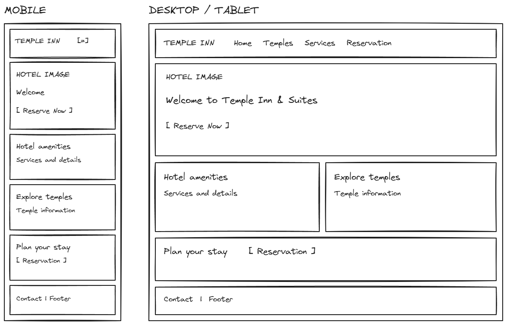

Site Name
Temple Inn & Suites is a fitting name because it connects the hotel with the temple visits its guests are planning. It also makes the lodging focus clear.
Site Purpose
The site helps temple visitors plan their stay by presenting hotel amenities, information about temples, and a reservation form. It gives guests a starting point for finding lodging and services suited to their visit.
Scenarios
- What hotel amenities are available to my family during our temple visit?
- How can I find information about temples and request a hotel reservation?
Color Scheme
- Dark gray — #3A3B3C: headings, body text, and header background.
- White — #FFFFFF: page background and text on the dark header.
- Orange — #FF9A00: decorative accents and section borders.
Typography
- Fira Sans: page and section headings.
- Goudy Bookletter 1911: paragraphs and list content.
Home Page Wireframes
These sketches show the planned home page on a mobile screen and a larger screen. The Services navigation item leads to the amenities section on the home page.
